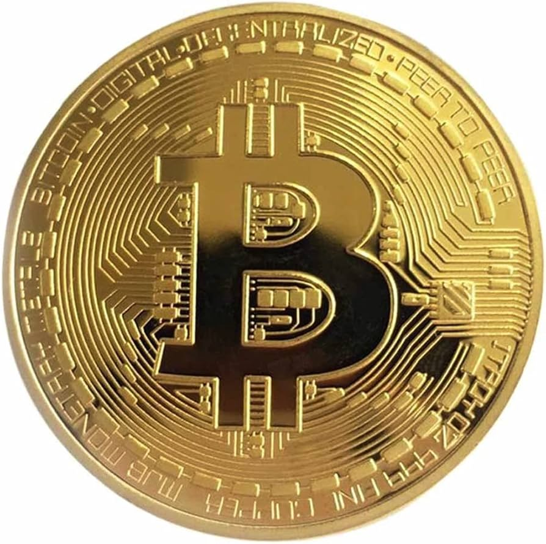
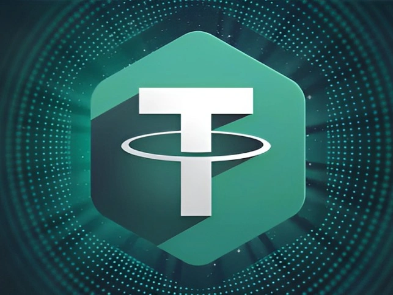
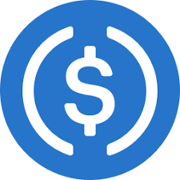

;
CYRPTOCURRENCY
| BITCOIN |
DESCRIPTION
Was introduced in 2009 and is used to act as money through the internet without the need of a bank. |
| TETHER |
Tether is used to exchange different currencies or other products. |
| USDC |
A token version of one U.S dollar. A type of digital currency that is close in value as a real U.S dollar. |
SOURCES:
Bitcoin: Mansa J. [Updated: September 2024]. What Is Bitcoin? How To Buy, Mine, And Use It. Investopedia.
LINK
Tether: [n.d]. What is cryptocurrency Tether (USDT) and how does it work?. KRIPTOMAT.LINK
USDC: Picardo E. [Updated: June 2024]. USD Coin (USDC): Definition, How It Works in Currency, and Value. Investopedia.LINK